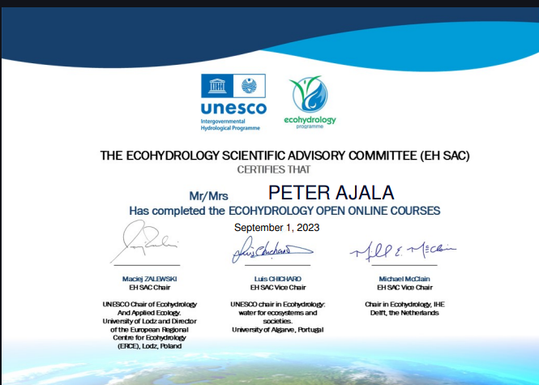

Fundamental of Freshwater Health
IHE - Delft Institute for Water Education

Water Resources Management and Policy
Université De Genève, Coursera

Climate Change in Water and Sanitation Utilities
BID, Coursera

Natural Attenuation of Groundwater Contaminants: New Paradigms, Technologies and Applications
Rice University, Coursera

Achieving Sustainable Development Goals on Water and Sanitation
Asian Development Bank Institute

IWRM for Climate Resilience
UN Environmental Programme, Cap-Net.

Water Pollution Management
UN Environmental Programme, Cap-Net

Certificate of Completion, Data Science with Python
Simplilearn

Introduction to Water, Sanitaion and Hygiene
UNICEF

Introduction to Sustainability
University of Illinois at Urbana-Champaign, Coursera

Ecohydrology
The Ecohydrology Scientific Advisory Committee (EH SAC)

Ecology: Ecosystem Dynamics and Conservation
American Museum of Natural History, Coursera.

Gender Responsive Approaches to Water, Sanitation, and Hygiene Post Pandemic
Cap-Net Virtual Campus

Water Safety Planning
Cap-Net Virtual Campus

What is Climate Change?
University of Colorado Boulder, Coursera
Climate Solutions
University of Edinburgh, Coursera

Diploma in Software Engineering
SQI College of ICT

Soft Skills Certificate
Jobberman, Nigeria.

The Water Cycle
PEPSICO, Coursera